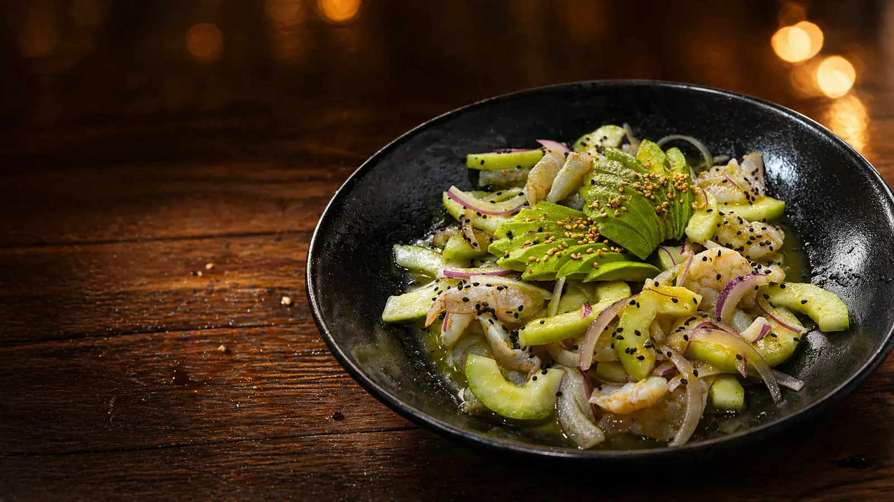
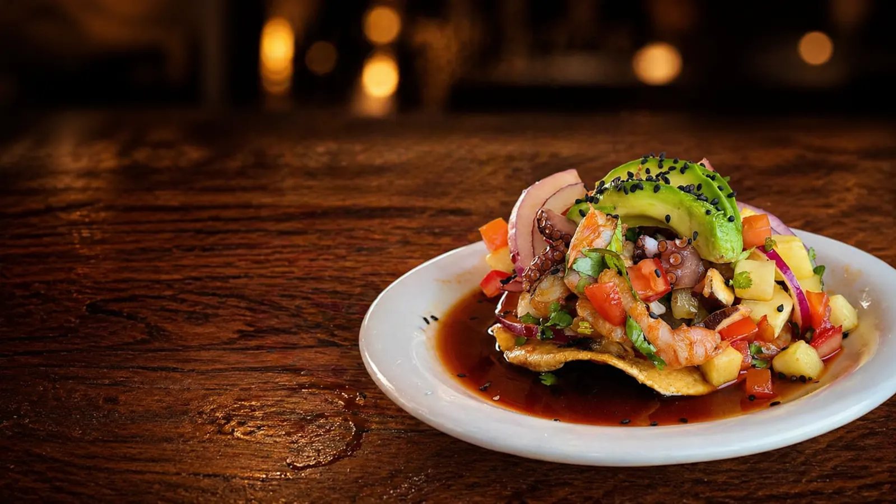
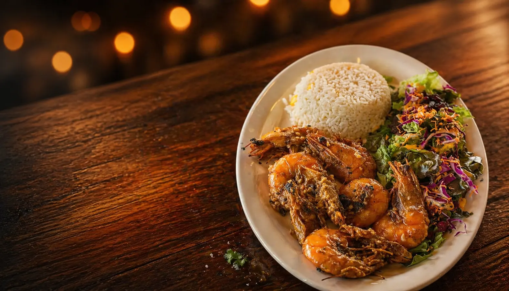
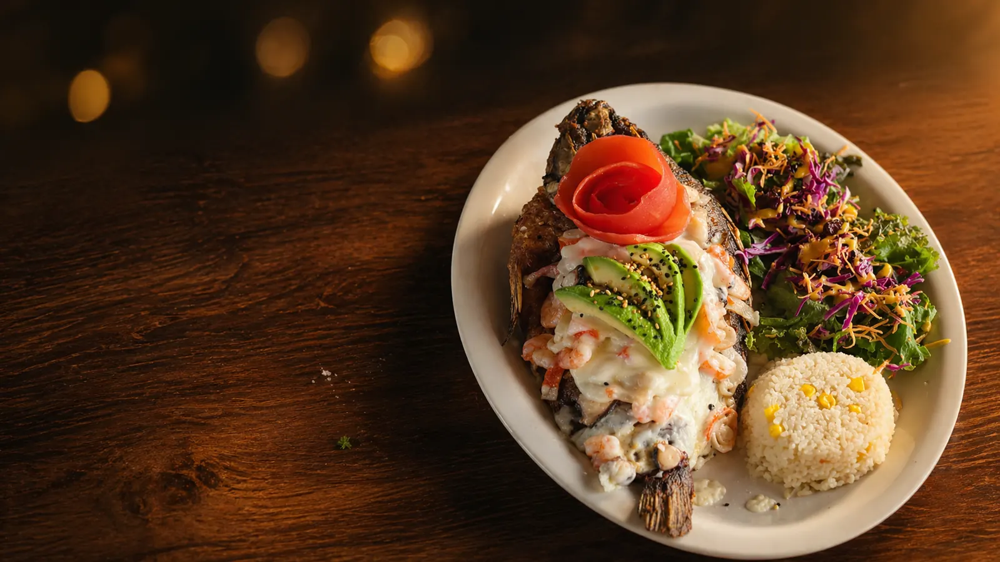
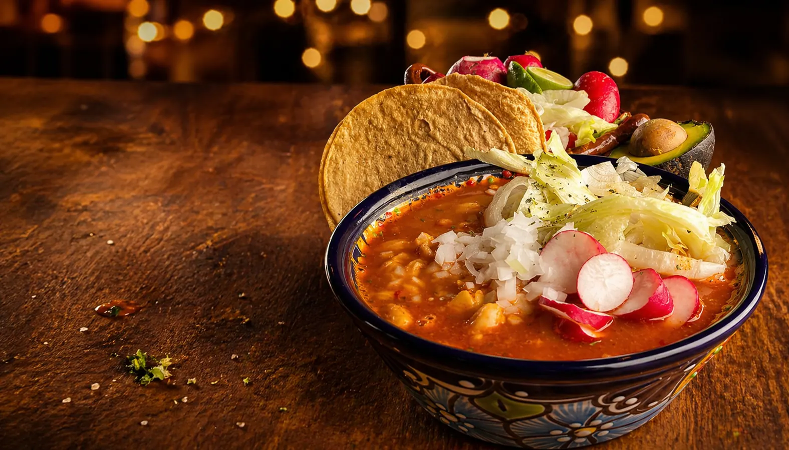
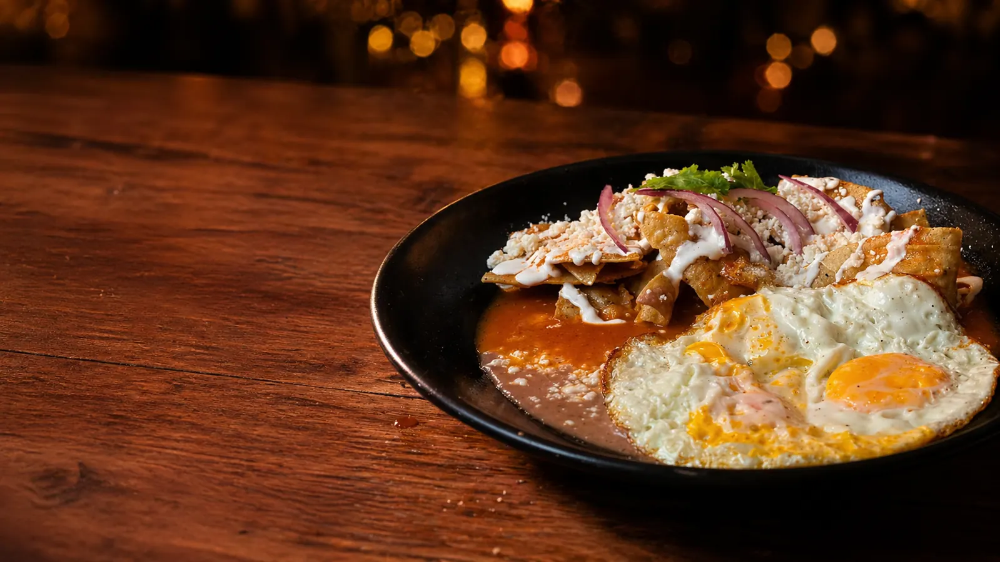

I
Aguachiles
Verde, negro y de la casa. Camarón fresco marinado con limón, chile y el aire del Pacífico. Servidos fríos para compartir al centro de la mesa.
Ver capítulo de aguachiles →Mariscos frescos de la costa de Michoacán, con recetas heredadas de generación en generación. Aguachiles, ceviches, camarones, pescados, pozole los jueves-viernes y desayunos desde las 9 AM.
Aguachiles, ceviches, camarones, pescados, pozole los jueves-viernes y desayunos desde las 9 de la mañana. Todo con producto fresco y el sazón michoacano que nos distingue.

Verde, negro y de la casa. Camarón fresco marinado con limón, chile y el aire del Pacífico. Servidos fríos para compartir al centro de la mesa.
Ver capítulo de aguachiles →
Pescado, camarón y mariscadas mixtas. Receta de la costa de Michoacán, heredada de generación en generación, en formato tostada o copa.
Ver ceviches y tostadas →
A la diabla, empanizados, al coco, zarandeados. El tripulante más querido del barco, con arroz y ensalada de guarnición.
Ver preparaciones de camarón →
Filete empapelado, pescado zarandeado, mojarra frita entera. Pesca del día, sin conservadores, servida al momento.
Ver pescados del muelle →
Dos días a la semana servimos pozole estilo de la casa, humeante, con todos los recaudos al centro de la mesa: cebolla, orégano, limón, rábano y tostadas.
Ver pozole de jueves y viernes →
Arranca el día en el muelle. Chilaquiles, huevos al gusto y antojos con el toque marino de la casa, de martes a domingo desde las 9 de la mañana.
Ver barra de desayunos →Reseñas reales en tiempo real desde nuestra ficha de Google Maps. Cada comentario es de alguien que ya pasó por el muelle: léelos antes de venir y, cuando vuelvas a casa, déjanos la tuya.
Nuestro muelle se encuentra en el corazón de la zona sur de Querétaro, con la terraza más fresca del sur de la ciudad, ambiente familiar y la sazón del Pacífico esperándote de martes a domingo, de 9:00 a 18:00 hrs.
Tres páginas de nuestra bitácora: la terraza, la barra y los detalles que hacen que cada visita se sienta como llegar a casa después de un viaje largo.


Pesca del día, sin conservadores. El producto llega con frecuencia para que la mesa tenga siempre lo mejor del Pacífico.
Aire corrido, sombra natural y sin el calor del mediodía. Pensada para comer con calma en familia.
Menú para peques, mesas grandes, tiempos sin prisa. Se come, se conversa y se regresa.
Nuestro restaurante nace del amor por el mar y las recetas que han pasado de generación en generación en nuestra familia. El sazón que nos distingue tiene su origen en la cocina tradicional, donde los sabores frescos, el respeto por los ingredientes y el toque casero son la base de cada platillo.
La idea surgió del deseo de compartir con más personas esos momentos especiales alrededor de la mesa, donde los mariscos no sólo alimentan, sino que reúnen, celebran y crean recuerdos. Cada receta está inspirada en nuestras raíces, combinando tradición con un estilo único que hoy nos representa.
Más que un restaurante, somos un espacio donde el sabor, la calidad y la calidez se encuentran en cada detalle.
La terraza más fresca del sur de Querétaro te espera. Reserva por WhatsApp o llama directo.
Cuéntanos un poco para atenderte mejor.
Estás a un toque de hablar con nosotros al 442 808 5907.